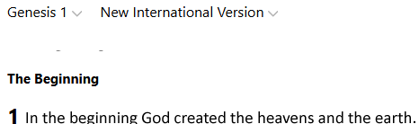
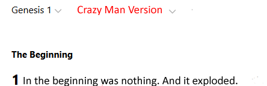
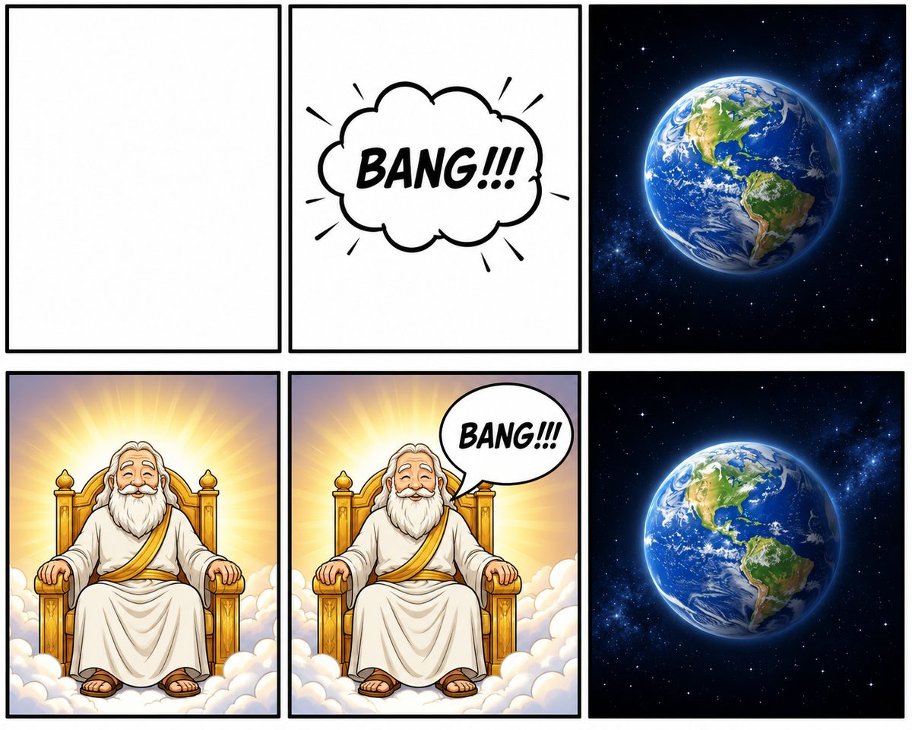

Good morning! I know some of you just quietly delete these emails without reading, and that's genuinely fine — I've said before I'm okay with that. But writing them is therapeutic for me, and every so often I hope one lands with someone. This morning I started writing the last half of my children's book, and before I got into it, I got happily sidetracked with a few things I think you'll enjoy. You'll definitely like the last one.
Erv and AI having fun, part 1. I asked AI to riff on Genesis 1 versus a "crazy man version" of how the universe actually got here.


Erv and AI having fun, part 2. A six-panel strip: nothing, then BANG, then Earth forming — set against Earth forming because God, seated on His throne, simply says "Bang!"

The joke works because it's not really a joke — it's the actual disagreement in miniature. Nobody serious disputes that the universe had a beginning that looked, physically, like an extremely fast, extremely hot expansion from an extremely dense state. The argument has never really been about whether there was a "bang." It's about whether anything said "let there be" right before it.
Now for something less silly and more substantial. This video is the one you should actually watch — 33 minutes, from Pastor Francis Anfuso, on what Einstein wished he knew about God and science: God & Science — What Albert Einstein Wished He Knew. It's the kind of thing I wish I'd had in front of me years ago — not apologetics trying to win an argument, but a genuine, careful look at where the physics and the theology actually meet, and where a mind as sharp as Einstein's still found itself circling questions it couldn't fully close.
I'm co-authoring a book with my pastor called, for now, Science and God, and this is exactly the kind of territory it lives in — every place Scripture touches on the physical world, and every place the physical world seems to be pointing back at something more than itself. More on that another time.